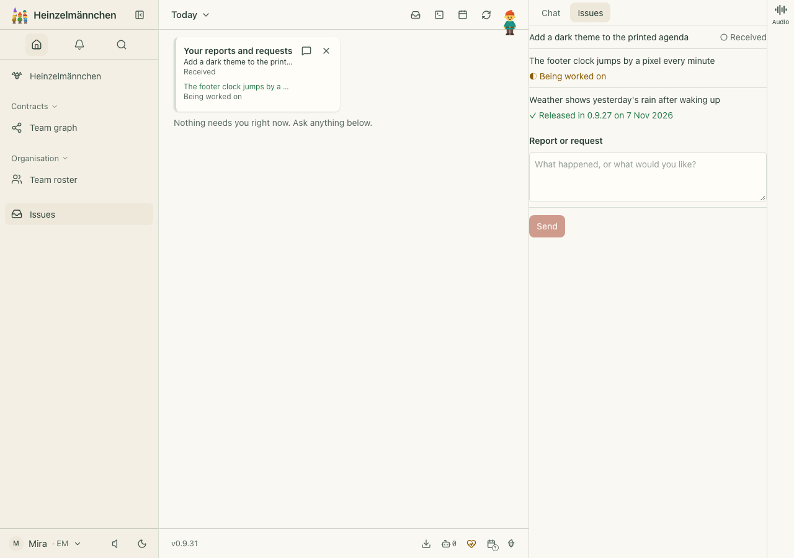
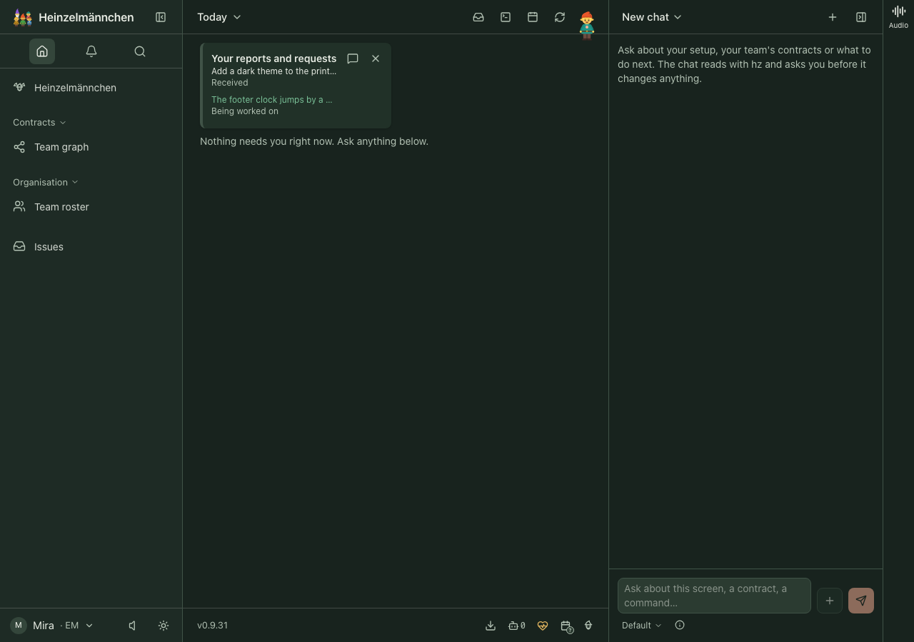
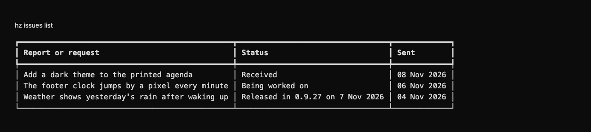

heinzel-issues
Isolated demonstration profile · Core 0.9.31 · Review these captures before committing. Click an image to inspect it at full size.

UI · Three fictional reports: received, being worked on, and released in 0.9.27 — with a form to send another
UI · Your open fictional reports and requests on Today, in dark mode; done ones leave the list
CLI · The same fictional reports and their plain states through the real CLI